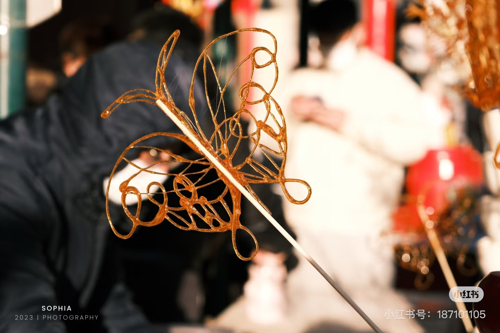
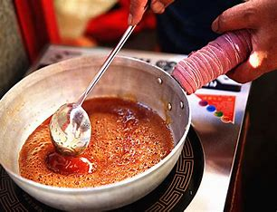
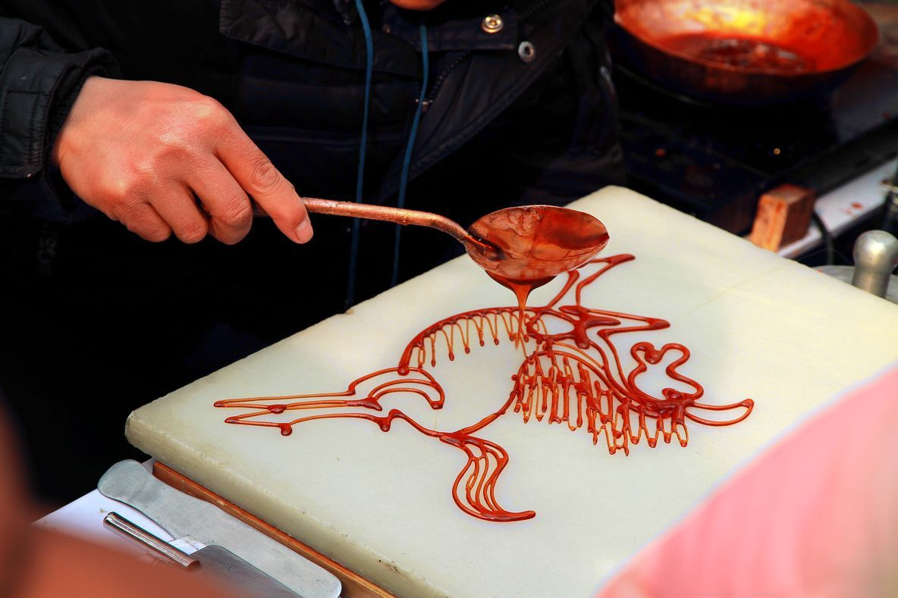
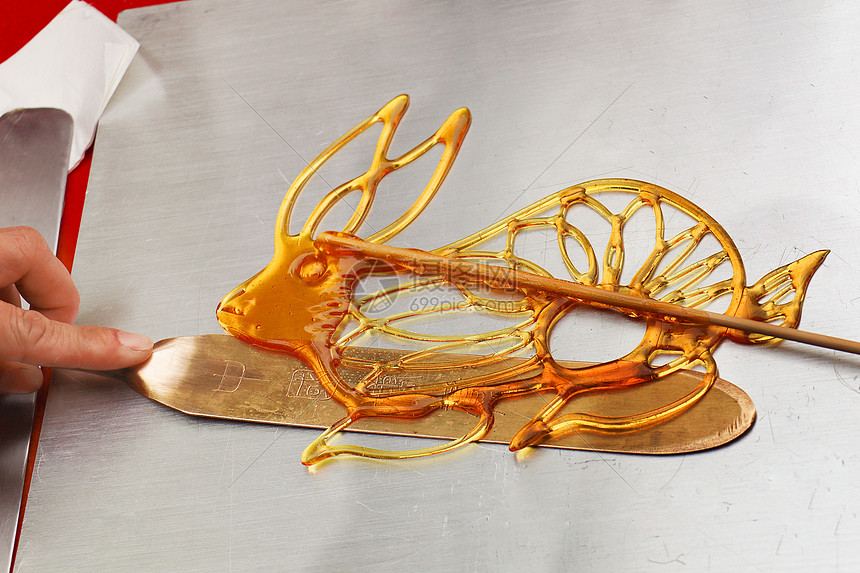

糖画制作看似简单，实则蕴含了丰富的技巧和经验。艺人需要掌握糖的温度控制、勺子的运笔技巧、造型的快速构思等多项技能。下面详细介绍传统糖画的制作工艺：

1 选糖与熬糖
糖画制作的第一步是选择合适的糖和熬制糖液：
- ■ 选糖：传统使用白糖或红糖，现代也有加入麦芽糖的
- ■ 配比：糖与水的比例约为5:1
- ■ 熬制：小火慢熬至160 - 180℃，糖液呈琥珀色
- ■ 测试：滴入冷水中能迅速凝固变脆
2 准备工具
主要工具
- ■ 铜锅：导热均匀，用于熬糖
- ■ 石板：光滑的大理石板，作画平台
- ■ 铜勺：不同大小的铜勺，用于浇铸
- ■ 铲刀：薄而锋利，用于铲起糖画
辅助工具
- ■ 竹签：用于固定糖画
- ■ 油刷：用于涂抹石板
- ■ 温度计：监测糖温
- ■ 模具：部分复杂造型使用
3 绘画技巧
糖画制作的核心在于绘画技巧：
- ■ 构思造型：根据顾客要求或即兴创作
- ■ 运勺技巧：控制勺子的倾斜角度和移动速度
- ■ 线条控制：通过糖液流量控制线条粗细
- ■ 层次处理：利用糖液叠加形成立体效果
- ■ 一气呵成：在糖液凝固前完成整个作品

熬糖过程

糖液浇铸

铲起糖画
4 地域特色技艺
不同地区的糖画技艺各具特色：
| 地区 | 特色 | 代表作品 |
|---|---|---|
| 北京 | 造型大气，线条粗犷 | 龙凤、历史人物 |
| 成都 | 细腻精致，色彩丰富 | 花鸟、熊猫 |
| 天津 | 立体感强，造型夸张 | 戏曲人物 |
| 广东 | 小巧玲珑，色彩艳丽 | 生肖、吉祥图案 |
5 现代创新技艺
随着时代发展，糖画技艺也在不断创新：
- ■ 彩色糖画：使用食用色素制作彩色糖画
- ■ 立体糖画：多层叠加形成3D效果
- ■ 大型糖画：制作大幅糖画作品
- ■ 糖画装置：与其他材料结合的装置艺术
6 糖画大师现场制作演示
这段视频展示了糖画大师现场制作糖画的精彩过程。
7 糖画工作坊
想亲身体验糖画制作？参加我们的传统糖画工作坊，在传承人指导下学习基础糖画技艺！
查看工作坊安排